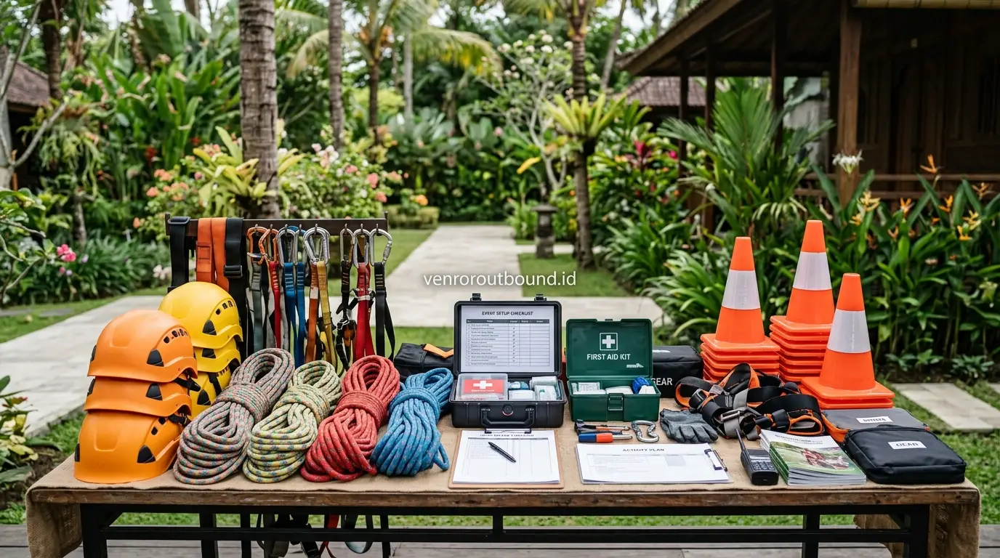

1. Dilema Tahunan HR & Finance: Kelola Sendiri atau Bermitra dengan Vendor?
Jawaban singkat: Menggunakan vendor outbound profesional dapat membantu perusahaan menghemat waktu koordinasi dan mengurangi beban operasional dibandingkan mengelola seluruh kegiatan secara mandiri. Vendor dapat membantu menyiapkan konsep, rundown, fasilitator, perlengkapan, serta alur kegiatan sesuai kebutuhan. Namun, keputusan tetap perlu mempertimbangkan anggaran, skala peserta, lokasi, kompleksitas program, dan kemampuan internal perusahaan.
Setiap kali agenda tahunan *corporate gathering* atau *team building* mendekat, departemen HR dan tim keuangan kerap menghadapi pertimbangan mendasar: apakah lebih menguntungkan membentuk panitia internal untuk mengelola acara sendiri, atau menyerahkan seluruh rangkaian operasional kepada pihak penyelenggara profesional?
Sekilas, opsi mengelola mandiri terlihat menarik karena tampak menghemat anggaran awal pada lembar pengajuan proposal. Namun, ketika kegiatan mulai dirancang, panitia internal sering kali harus menghadapi realita beban koordinasi yang sangat menguras energi: mencari lokasi yang tepat, memesan katering terpercaya, membeli atau menyewa peralatan game, menyusun rundown per jam, hingga bertanggung jawab atas keselamatan rekan-rekannya di alam terbuka.

Panduan Praktis Memilih Vendor Outbound Terpercaya untuk Korporat
Kriteria penilaian legalitas, rekam jejak keselamatan, dan transparansi fasilitas sebelum tanda tangan kontrak.
2. Tabel Komparasi: Kelola Mandiri vs Menggunakan Vendor Outbound
Berikut adalah matriks perbandingan mendalam untuk membantu jajaran manajemen menimbang setiap aspek operasional secara objektif:

Standar kesiapan peralatan keselamatan, briefing teknis, dan pos P3K yang dikoordinasikan secara terpadu.
3. Menghitung 'Opportunity Cost' dan Beban Jam Kerja Panitia Internal
Bagi tim *Finance*, menghitung efisiensi tidak cukup hanya membandingkan total angka tagihan (*nominal invoice*). Ada faktor biaya tak kasat mata yang sering terabaikan, yaitu **Total Cost of Effort**:
- Waktu Kerja Pokok yang Tersita: Saat anggota tim HR, marketing, atau operasional ditunjuk menjadi panitia, puluhan jam kerja mereka yang seharusnya menghasilkan nilai bisnis teralihkan untuk mengurus survey lokasi, tawar-menawar sewa bus, atau packing alat game.
- Panitia Tidak Bisa Menikmati Acara: Karyawan yang bertugas menjadi panitia internal kerap mengalami kelelahan ekstra saat hari pelaksanaan karena harus mengatur sound system, konsumsi, dan presensi, sehingga kehilangan momen kebersamaan untuk menyegarkan pikiran.
- Risiko Miskomunikasi Vendor Pihak Ketiga: Mengurus secara mandiri 4-5 vendor terpisah (venue, katering, bus, MC, sewa alat) memperbesar kemungkinan terjadi celah koordinasi di lapangan.

Vendor Outbound Perusahaan di Batu Malang: Pilihan Venue & Fasilitas
Ulasan lokasi pegunungan sejuk di Jawa Timur yang cocok untuk corporate gathering dan leadership camp.
4. Kapan Saat yang Tepat Menggunakan Jasa Vendor Profesional?
Gunakan panduan praktis berikut untuk menentukan opsi terbaik bagi institusi Anda:
- Jumlah Peserta di Atas 25–30 Orang: Skala kelompok menengah hingga besar membutuhkan mobilisasi lapangan yang disiplin agar tidak terjadi kekacauan waktu (*rundown chaos*).
- Kegiatan Melibatkan Simulasi Rintangan Luar Ruang: Aktivitas dengan elemen tantangan fisik memerlukan instruktur terlatih yang paham standar keselamatan dan pertolongan pertama.
- Tujuan Utama adalah Rekonsiliasi & Penyelarasan Budaya Kerja: Fasilitator eksternal bertindak sebagai penengah netral yang mampu memberikan sesi *debriefing* objektif tanpa bias politik internal kantor.
- Agenda Diadakan di Luar Kota: Vendor lokal memiliki jaringan kemitraan dengan pemilik lahan, hotel, dan katering terpercaya setempat sehingga proses perizinan jauh lebih ringkas.

Dampak Komunikasi Tim yang Buruk Terhadap Produktivitas & Kinerja
Analisis pentingnya keterbukaan komunikasi dan metode outbound untuk mengikis ego sektoral antardivisi.
5. Kesimpulan
Memilih antara mengelola outbound secara mandiri atau menggandeng penyedia jasa profesional adalah keputusan strategis yang berputar pada efisiensi waktu, manajemen risiko, dan kualitas pengalaman peserta. Dengan bermitra bersama vendor outbound yang berpengalaman, perusahaan dapat memastikan seluruh karyawan—termasuk tim HR—dapat menikmati kegiatan secara maksimal dan kembali ke kantor dengan energi baru yang produktif.
Rencanakan Outbound Perusahaan Tanpa Beban Operasional
Hemat waktu dan tenaga berharga Anda, hubungi tim ahli kami via WhatsApp di +62 82211221909 untuk mendiskusikan konsep acara, estimasi biaya, dan opsi venue terbaik.
Hubungi Tim Ahli via WhatsAppPertanyaan Sering Diajukan (FAQ)

Arby Ardiansyah
Arby Ardiansyah merupakan penulis dan konsultan di Vendor Outbound yang berfokus pada analisis pengadaan kegiatan korporat, efisiensi anggaran HR, mitigasi risiko outdoor, dan perancangan modul team building berbasis tujuan bisnis.